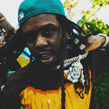

About Chief Keef
Keith Farrelle Cozart (born August 15, 1995),better known by his stage name Chief Keef, is an American rapper, singer, songwriter and record producer. His music first became popular during his teen years in the early 2010s among high school students from Chicago's South Side. In 2012, his popular local single "I Don't Like" was remixed by American rapper Kanye West and reached the Billboard Rap Top 20, further raising Cozart's profile.A bidding war between major labels resulted in Keef signing with Interscope. His debut album Finally Rich was released in December 2012, and featured the singles "I Don't Like" and "Love Sosa", which would popularize the Chicago rap subgenre drill. Chief Keef has faced ongoing legal issues during his career, including weapons possession charges, house arrest sentences, and a performance ban imposed by Chicago authorities.Though he was dropped from Interscope in late 2014 and later signed to 1017 Records, he continued self-releasing projects through his own Glo Gang label. These included: Nobody (2014), Back from the Dead 2 (2014), Bang 3 (2015), and Thot Breaker (2017). As of the late 2010s, critics have pointed to Chief Keef as the progenitor of the drill subgenre, noting the impact of his music on other artists.
More about Chief Keef
As part of his contract with Interscope Records, Chief Keef's label imprint, Glory Boyz Entertainment (GBE), was established.He and his manager, Rovan Manuel, each owned 40% of GBE's shares. Chief Keef's cousin and fellow rapper, Fredo Santana, his uncle Alonzo Carter, and Anthony H. Dade, owned the remaining 20% of GBE. Various associates would be signed with the label, such as rappers Lil Reese, Fredo Santana and producer Young Chop. The label had been active since 2011 but had only released mixtapes and was not a fully functioning record company. After releasing Chief Keef's Finally Rich in December 2012, the label was set to release an album by Lil Reese in the following months, along with various mixtapes. However, on January 3, 2014, Chief Keef said that Glory Boyz Entertainment was "no more", and he was starting a new record label named Glo Gang. Prior to his death, Blood Money revealed in an interview the members of Glo Gang were Chief Keef, Tray Savage, Ballout, Capo, Tadoe, JusGlo, and himself.
Additional information about Chief Keef!